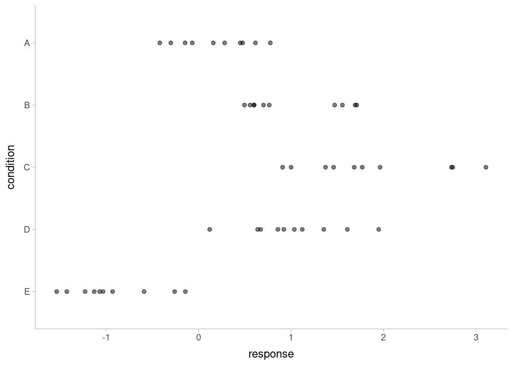
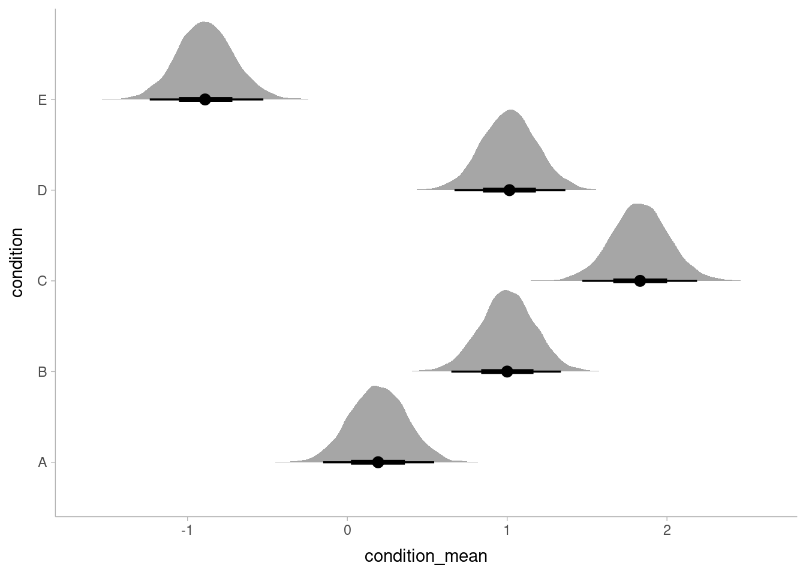
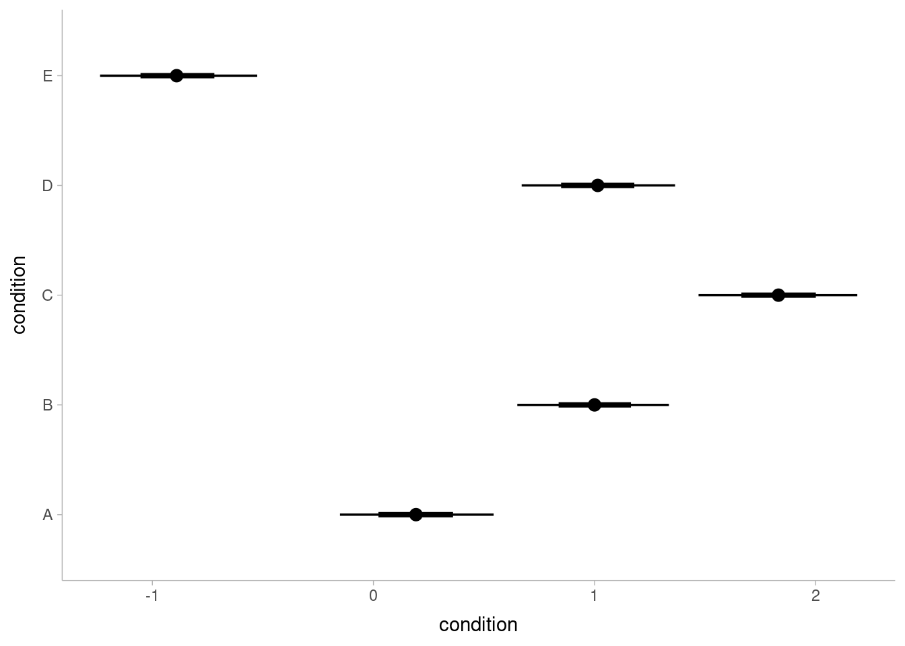
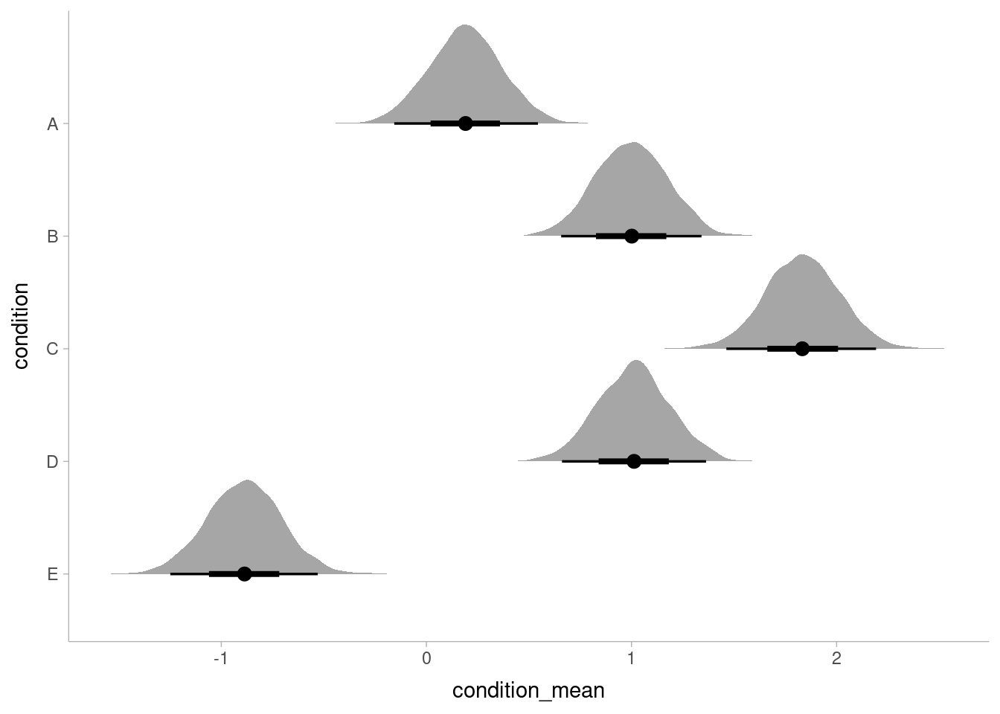
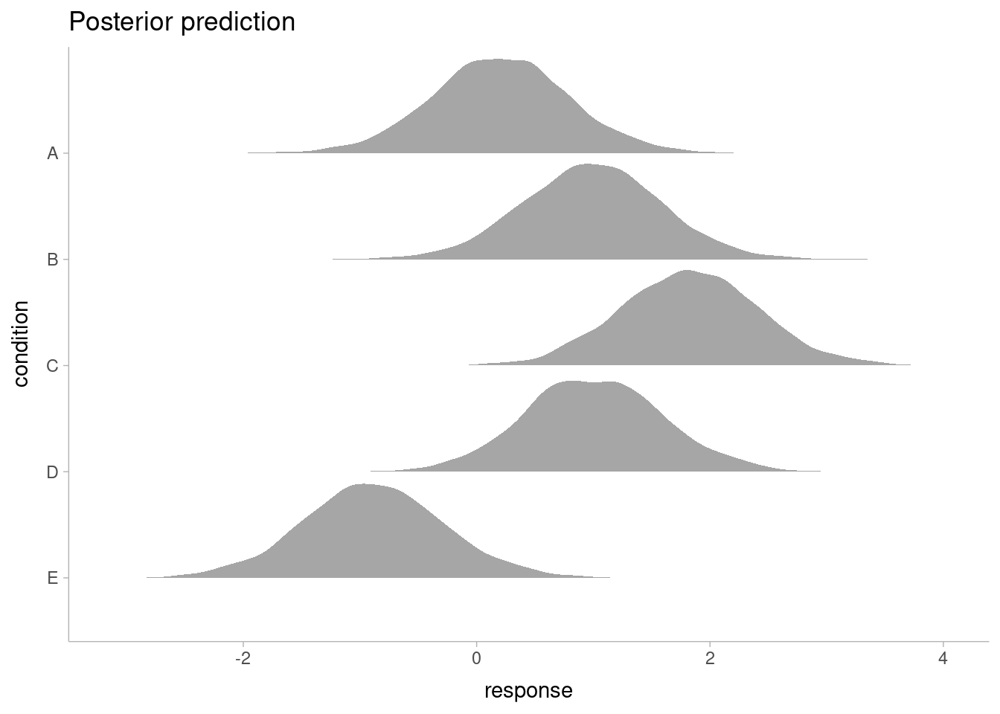

계층적 선형 모형
계층적 선형 모형(multilevel/hierarchical linear model, HLM)은 선형 혼합 모형(linear mixed model)과 같은 수학적 전개에서 나오며 문제를 보는 관점에 따라 다르게 부른다[1]. 혼합 모형에서는 변량 인자(random factor)를 다루는데 그 효과에 대해서는 크게 관심이 없을 수 있다[2]. 계층 모형에서는 변량 인자들 사이에 포함관계가 있다고 보는 것이다. 예를 들어 어떤 학생은 학급에, 그 학급은 학교에, 그 학교는 소속 지역의 영향을 받는다고 볼 수 있다. 이런 가설은 일면 자연스럽게 보이나 통계적인 모델 수립과 그 모수를 추정하고 추론하는 것은 쉽지 않다. 특히 분산 특성에 대한 제약을 완화시켜 모델을 수립할 경우 베이즈 접근이 더 용이하다. 베이즈 접근을 위한 R 패키지가 많이 있는데, tidybayes 패키지는 베이즈 분석에서 많이 사용하는 패키지나 표준적인 분석 절차를 깔끔하게(tidy) 처리할 수 있도록 통합적인 환경을 제공한다. 이 글을 통하여 그 일면을 살펴보겠다.
데이터를 포함하여 해석 절차까지 tidybayes 패키지의 튜토리얼을 많이 참고하였다[3]. 더 자세한 내용은 원 튜토리얼을 참고하기 바란다.
데이터
A에서 E까지 5개의 condition 처리에 따라 response 응답이 나온 인공 데이터를 다룬다. 단, 처리에 상관없이 동일 분산 특성을 적용한 데이터로 베이즈 접근이 반드시 유리한 데이터는 아니다.
library(tidyverse)
library(tidymodels)
library(tidybayes)
library(rstan)
library(brms)
library(lme4)
theme_set(theme_tidybayes())
options(mc.cores = parallel::detectCores())
set.seed(5)
n <- 10
n_condition <- 5
ABC <- tibble(
condition = rep(c("A","B","C","D","E"), n),
response = rnorm(n * 5, c(0,1,2,1,-1), 0.5)
) %>%
mutate(condition = factor(condition))
ABC %>%
ggplot(aes(x = response, y = fct_rev(condition))) +
geom_point(alpha = 0.5) +
ylab("condition")
모델
이 절에서는 이 데이터에 대하여 단순 회귀부터 tidybayes 프레임 내 brms, stan을 통한 베이즈 접근까지 여러 방법을 정리해 보겠다. 각 방법의 수행 방법을 정리하기 위해서며 방법 간의 장단점을 논하지는 않겠다.
선형 회귀: lm
lm 함수를 사용하면 기본적인 factor 처리를 내부적으로 해 주므로 손쉽게 적합해 볼 수 있다. 대비(contrast) 개념을 알아야 결과 해석을 할 수 있다.
contrasts(ABC$condition)## B C D E
## A 0 0 0 0
## B 1 0 0 0
## C 0 1 0 0
## D 0 0 1 0
## E 0 0 0 1A를 기준으로 각 처리가 얼마나 떨어져 있는지 분석할 수 있다. lm 적합 후 A는 Intercept 항으로 추정된다.
fit_lm_basic <- lm(response ~ ., data = ABC)
summary(fit_lm_basic)##
## Call:
## lm(formula = response ~ ., data = ABC)
##
## Residuals:
## Min 1Q Median 3Q Max
## -0.9666 -0.4084 -0.1053 0.4104 1.2331
##
## Coefficients:
## Estimate Std. Error t value Pr(>|t|)
## (Intercept) 0.1816 0.1732 1.048 0.30015
## conditionB 0.8326 0.2450 3.399 0.00143 **
## conditionC 1.6930 0.2450 6.910 1.38e-08 ***
## conditionD 0.8456 0.2450 3.452 0.00122 **
## conditionE -1.1168 0.2450 -4.559 3.94e-05 ***
## ---
## Signif. codes: 0 '***' 0.001 '**' 0.01 '*' 0.05 '.' 0.1 ' ' 1
##
## Residual standard error: 0.5478 on 45 degrees of freedom
## Multiple R-squared: 0.7694, Adjusted R-squared: 0.7489
## F-statistic: 37.53 on 4 and 45 DF, p-value: 8.472e-14coefs <- coef(fit_lm_basic)
(coefs + coefs[1])[-1]## conditionB conditionC conditionD conditionE
## 1.014214 1.874584 1.027179 -0.935226처치 결과가 모분포를 잘 추적하였다.모 분포의 분산은 Residual standard error 항에서 추정할 수 있다.
선형 회귀: tidymodels 분석 절차를 따른 lm
특성 변수가 많고, 전처리도 필요하며 튜닝이 필요한 모델을 사용한다면 조직적인 접근이 필요하다. tidymodels 패키지는 현명한 선택이 된다. 다음은 tidymodels 패키지의 기본 적합 절차는 다음과 같다.
mod_lm <- linear_reg() %>%
set_engine("lm")
rec <- recipe(response ~ ., data = ABC) %>%
step_dummy(condition)
wf <- workflow() %>%
add_model(mod_lm) %>%
add_recipe(rec)
fit_lm <- wf %>%
fit(data = ABC)
fit_lm %>%
pull_workflow_fit() %>%
tidy()## # A tibble: 5 x 5
## term estimate std.error statistic p.value
## <chr> <dbl> <dbl> <dbl> <dbl>
## 1 (Intercept) 0.182 0.173 1.05 0.300
## 2 condition_B 0.833 0.245 3.40 0.00143
## 3 condition_C 1.69 0.245 6.91 0.0000000138
## 4 condition_D 0.846 0.245 3.45 0.00122
## 5 condition_E -1.12 0.245 -4.56 0.0000394결과는 lm의 결과와 같고 내부에 그 적합 결과를 가지고 있다.
summary(pull_workflow_fit(fit_lm)$fit)##
## Call:
## stats::lm(formula = ..y ~ ., data = data)
##
## Residuals:
## Min 1Q Median 3Q Max
## -0.9666 -0.4084 -0.1053 0.4104 1.2331
##
## Coefficients:
## Estimate Std. Error t value Pr(>|t|)
## (Intercept) 0.1816 0.1732 1.048 0.30015
## condition_B 0.8326 0.2450 3.399 0.00143 **
## condition_C 1.6930 0.2450 6.910 1.38e-08 ***
## condition_D 0.8456 0.2450 3.452 0.00122 **
## condition_E -1.1168 0.2450 -4.559 3.94e-05 ***
## ---
## Signif. codes: 0 '***' 0.001 '**' 0.01 '*' 0.05 '.' 0.1 ' ' 1
##
## Residual standard error: 0.5478 on 45 degrees of freedom
## Multiple R-squared: 0.7694, Adjusted R-squared: 0.7489
## F-statistic: 37.53 on 4 and 45 DF, p-value: 8.472e-14혼합 모형: lme4
임의 효과와 고정 효과에 대하여 명시적인 모형을 세울 수 있다. lme4에 대해서는 이전 포스트를 참고하자[2].
fit_lme4 <- lmer(response ~ 1 + (1|condition), data = ABC)
summary(fit_lme4)## Linear mixed model fit by REML ['lmerMod']
## Formula: response ~ 1 + (1 | condition)
## Data: ABC
##
## REML criterion at convergence: 98.5
##
## Scaled residuals:
## Min 1Q Median 3Q Max
## -1.7040 -0.6954 -0.2159 0.7290 2.3114
##
## Random effects:
## Groups Name Variance Std.Dev.
## condition (Intercept) 1.0963 1.0471
## Residual 0.3001 0.5478
## Number of obs: 50, groups: condition, 5
##
## Fixed effects:
## Estimate Std. Error t value
## (Intercept) 0.6325 0.4746 1.333고정 효과는 Fixed effects의 (Intercept)에서 알아볼 수 있다. 이 표준 오차에 대하여 추가적인 추정이 가능하다.
베이즈 계층 모형: brms
lme4에서 사용하는 모형 식을 그대로 사용하면서 베이즈 분석을 진행할 수 있다. 아래는 사전 분포는 tidybayes 문석을 참고하였다[4].
fit_brms <- brm(response ~ 1 + (1|condition),
data = ABC,
prior = c(
prior(normal(0, 1), class = Intercept),
prior(student_t(3, 0, 1), class = sd),
prior(student_t(3, 0, 1), class = sigma)
),
warmup = 1000, iter = 3000,
seed = 952)## Compiling Stan program...## Trying to compile a simple C file## Running /usr/lib64/R/bin/R CMD SHLIB foo.c
## gcc -m64 -I"/usr/include/R" -DNDEBUG -I"/home/danhojin/R/x86_64-redhat-linux-gnu-library/4.0/Rcpp/include/" -I"/home/danhojin/R/x86_64-redhat-linux-gnu-library/4.0/RcppEigen/include/" -I"/home/danhojin/R/x86_64-redhat-linux-gnu-library/4.0/RcppEigen/include/unsupported" -I"/home/danhojin/R/x86_64-redhat-linux-gnu-library/4.0/BH/include" -I"/home/danhojin/R/x86_64-redhat-linux-gnu-library/4.0/StanHeaders/include/src/" -I"/home/danhojin/R/x86_64-redhat-linux-gnu-library/4.0/StanHeaders/include/" -I"/home/danhojin/R/x86_64-redhat-linux-gnu-library/4.0/RcppParallel/include/" -I"/home/danhojin/R/x86_64-redhat-linux-gnu-library/4.0/rstan/include" -DEIGEN_NO_DEBUG -DBOOST_DISABLE_ASSERTS -DBOOST_PENDING_INTEGER_LOG2_HPP -DSTAN_THREADS -DBOOST_NO_AUTO_PTR -include '/home/danhojin/R/x86_64-redhat-linux-gnu-library/4.0/StanHeaders/include/stan/math/prim/mat/fun/Eigen.hpp' -D_REENTRANT -DRCPP_PARALLEL_USE_TBB=1 -I/usr/local/include -fpic -O2 -flto=auto -ffat-lto-objects -fexceptions -g -grecord-gcc-switches -pipe -Wall -Werror=format-security -Wp,-D_FORTIFY_SOURCE=2 -Wp,-D_GLIBCXX_ASSERTIONS -specs=/usr/lib/rpm/redhat/redhat-hardened-cc1 -fstack-protector-strong -specs=/usr/lib/rpm/redhat/redhat-annobin-cc1 -m64 -mtune=generic -fasynchronous-unwind-tables -fstack-clash-protection -c foo.c -o foo.o
## In file included from /home/danhojin/R/x86_64-redhat-linux-gnu-library/4.0/RcppEigen/include/Eigen/Dense:1,
## from /home/danhojin/R/x86_64-redhat-linux-gnu-library/4.0/StanHeaders/include/stan/math/prim/mat/fun/Eigen.hpp:13,
## from <command-line>:
## /home/danhojin/R/x86_64-redhat-linux-gnu-library/4.0/RcppEigen/include/Eigen/Core:82:12: fatal error: new: No such file or directory
## 82 | #include <new>
## | ^~~~~
## compilation terminated.
## make: *** [/usr/lib64/R/etc/Makeconf:172: foo.o] Error 1## Start sampling## Warning: There were 2 divergent transitions after warmup. See
## http://mc-stan.org/misc/warnings.html#divergent-transitions-after-warmup
## to find out why this is a problem and how to eliminate them.## Warning: Examine the pairs() plot to diagnose sampling problemssummary(fit_brms)## Warning: There were 2 divergent transitions after warmup. Increasing adapt_delta
## above 0.8 may help. See http://mc-stan.org/misc/warnings.html#divergent-
## transitions-after-warmup## Family: gaussian
## Links: mu = identity; sigma = identity
## Formula: response ~ 1 + (1 | condition)
## Data: ABC (Number of observations: 50)
## Samples: 4 chains, each with iter = 3000; warmup = 1000; thin = 1;
## total post-warmup samples = 8000
##
## Group-Level Effects:
## ~condition (Number of levels: 5)
## Estimate Est.Error l-95% CI u-95% CI Rhat Bulk_ESS Tail_ESS
## sd(Intercept) 1.14 0.41 0.60 2.18 1.00 1870 3322
##
## Population-Level Effects:
## Estimate Est.Error l-95% CI u-95% CI Rhat Bulk_ESS Tail_ESS
## Intercept 0.48 0.48 -0.49 1.40 1.00 1920 2476
##
## Family Specific Parameters:
## Estimate Est.Error l-95% CI u-95% CI Rhat Bulk_ESS Tail_ESS
## sigma 0.56 0.06 0.46 0.70 1.00 4100 3906
##
## Samples were drawn using sampling(NUTS). For each parameter, Bulk_ESS
## and Tail_ESS are effective sample size measures, and Rhat is the potential
## scale reduction factor on split chains (at convergence, Rhat = 1).tidybayes::get_variables
get_variables 함수로 적합된 베이즈 모형의 변수를 가져올 수 있다.
get_variables(fit_brms)## [1] "b_Intercept" "sd_condition__Intercept"
## [3] "sigma" "r_condition[A,Intercept]"
## [5] "r_condition[B,Intercept]" "r_condition[C,Intercept]"
## [7] "r_condition[D,Intercept]" "r_condition[E,Intercept]"
## [9] "lp__" "accept_stat__"
## [11] "stepsize__" "treedepth__"
## [13] "n_leapfrog__" "divergent__"
## [15] "energy__"tidybayes::gather_draws, median_qi
gather_draws 함수로 타이디 형식으로 데이터를 추출하고 median_qi 함수로 요약할 수 있다.
# point summaries and intervals
fit_brms %>%
gather_draws(b_Intercept, sigma) %>%
median_qi()## # A tibble: 2 x 7
## .variable .value .lower .upper .width .point .interval
## <chr> <dbl> <dbl> <dbl> <dbl> <chr> <chr>
## 1 b_Intercept 0.489 -0.486 1.40 0.95 median qi
## 2 sigma 0.555 0.456 0.701 0.95 median qifit_brms %>%
spread_draws(r_condition[condition,]) %>%
median_qi()## # A tibble: 5 x 7
## condition r_condition .lower .upper .width .point .interval
## <chr> <dbl> <dbl> <dbl> <dbl> <chr> <chr>
## 1 A -0.297 -1.23 0.723 0.95 median qi
## 2 B 0.505 -0.415 1.55 0.95 median qi
## 3 C 1.33 0.410 2.41 0.95 median qi
## 4 D 0.522 -0.418 1.54 0.95 median qi
## 5 E -1.37 -2.35 -0.376 0.95 median qi그리고, 적합 결과를 효과적으로 도시할 수 있다.
fit_brms %>%
spread_draws(b_Intercept, r_condition[condition,]) %>%
mutate(condition_mean = b_Intercept + r_condition) %>%
ggplot(aes(y = condition, x = condition_mean)) +
stat_halfeye()
tidybayes::add_fitted_draws
적합 후 사후 분포에서 표본 추출을 쉽게 할 수 있다.
ABC %>%
modelr::data_grid(condition) %>%
add_fitted_draws(fit_brms) %>%
ggplot(aes(x = .value, y = condition)) +
stat_pointinterval() +
xlab("condition")
혼합 모형: stan
tidybayes::compose_data
stan 적합 시 데이터 전달이 쉬워진다.
mod_stan_code <- "
data {
int<lower=1> n;
int<lower=1> n_condition;
int<lower=1, upper=n_condition> condition[n];
real response[n];
}
parameters {
real overall_mean;
vector[n_condition] condition_zoffset;
real<lower=0> response_sd;
real<lower=0> condition_mean_sd;
}
transformed parameters {
vector[n_condition] condition_mean;
condition_mean = overall_mean + condition_zoffset * condition_mean_sd;
}
model {
response_sd ~ cauchy(0, 1);
condition_mean_sd ~ cauchy(0, 1);
overall_mean ~ normal(0, 1);
condition_zoffset ~ normal(0, 1);
for (i in 1:n) {
response[i] ~ normal(condition_mean[condition[i]], response_sd);
}
}
"
mod_stan <- stan_model(model_code = mod_stan_code)## Trying to compile a simple C file## Running /usr/lib64/R/bin/R CMD SHLIB foo.c
## gcc -m64 -I"/usr/include/R" -DNDEBUG -I"/home/danhojin/R/x86_64-redhat-linux-gnu-library/4.0/Rcpp/include/" -I"/home/danhojin/R/x86_64-redhat-linux-gnu-library/4.0/RcppEigen/include/" -I"/home/danhojin/R/x86_64-redhat-linux-gnu-library/4.0/RcppEigen/include/unsupported" -I"/home/danhojin/R/x86_64-redhat-linux-gnu-library/4.0/BH/include" -I"/home/danhojin/R/x86_64-redhat-linux-gnu-library/4.0/StanHeaders/include/src/" -I"/home/danhojin/R/x86_64-redhat-linux-gnu-library/4.0/StanHeaders/include/" -I"/home/danhojin/R/x86_64-redhat-linux-gnu-library/4.0/RcppParallel/include/" -I"/home/danhojin/R/x86_64-redhat-linux-gnu-library/4.0/rstan/include" -DEIGEN_NO_DEBUG -DBOOST_DISABLE_ASSERTS -DBOOST_PENDING_INTEGER_LOG2_HPP -DSTAN_THREADS -DBOOST_NO_AUTO_PTR -include '/home/danhojin/R/x86_64-redhat-linux-gnu-library/4.0/StanHeaders/include/stan/math/prim/mat/fun/Eigen.hpp' -D_REENTRANT -DRCPP_PARALLEL_USE_TBB=1 -I/usr/local/include -fpic -O2 -flto=auto -ffat-lto-objects -fexceptions -g -grecord-gcc-switches -pipe -Wall -Werror=format-security -Wp,-D_FORTIFY_SOURCE=2 -Wp,-D_GLIBCXX_ASSERTIONS -specs=/usr/lib/rpm/redhat/redhat-hardened-cc1 -fstack-protector-strong -specs=/usr/lib/rpm/redhat/redhat-annobin-cc1 -m64 -mtune=generic -fasynchronous-unwind-tables -fstack-clash-protection -c foo.c -o foo.o
## In file included from /home/danhojin/R/x86_64-redhat-linux-gnu-library/4.0/RcppEigen/include/Eigen/Dense:1,
## from /home/danhojin/R/x86_64-redhat-linux-gnu-library/4.0/StanHeaders/include/stan/math/prim/mat/fun/Eigen.hpp:13,
## from <command-line>:
## /home/danhojin/R/x86_64-redhat-linux-gnu-library/4.0/RcppEigen/include/Eigen/Core:82:12: fatal error: new: No such file or directory
## 82 | #include <new>
## | ^~~~~
## compilation terminated.
## make: *** [/usr/lib64/R/etc/Makeconf:172: foo.o] Error 1fit_stan <- sampling(mod_stan, data = compose_data(ABC), control = list(adapt_delta = 0.99))
# summary(fit_1)
fit_stan <- recover_types(fit_stan, ABC)
print(fit_stan, pars = c("overall_mean", "condition_mean_sd", "condition_mean", "response_sd"))## Inference for Stan model: d0c43665a494af88dbcbba0650b02a88.
## 4 chains, each with iter=2000; warmup=1000; thin=1;
## post-warmup draws per chain=1000, total post-warmup draws=4000.
##
## mean se_mean sd 2.5% 25% 50% 75% 97.5% n_eff Rhat
## overall_mean 0.53 0.01 0.46 -0.44 0.24 0.54 0.83 1.39 1025 1
## condition_mean_sd 1.17 0.02 0.47 0.59 0.87 1.06 1.35 2.37 834 1
## condition_mean[1] 0.19 0.00 0.18 -0.16 0.07 0.19 0.31 0.54 5187 1
## condition_mean[2] 1.00 0.00 0.18 0.66 0.88 1.00 1.12 1.34 4690 1
## condition_mean[3] 1.83 0.00 0.18 1.46 1.71 1.83 1.96 2.19 4879 1
## condition_mean[4] 1.01 0.00 0.18 0.66 0.89 1.01 1.13 1.36 4377 1
## condition_mean[5] -0.89 0.00 0.18 -1.25 -1.01 -0.89 -0.77 -0.53 5201 1
## response_sd 0.56 0.00 0.06 0.46 0.52 0.56 0.60 0.71 1406 1
##
## Samples were drawn using NUTS(diag_e) at Tue Dec 15 12:26:58 2020.
## For each parameter, n_eff is a crude measure of effective sample size,
## and Rhat is the potential scale reduction factor on split chains (at
## convergence, Rhat=1).get_variables(fit_stan)## [1] "overall_mean" "condition_zoffset[1]" "condition_zoffset[2]"
## [4] "condition_zoffset[3]" "condition_zoffset[4]" "condition_zoffset[5]"
## [7] "response_sd" "condition_mean_sd" "condition_mean[1]"
## [10] "condition_mean[2]" "condition_mean[3]" "condition_mean[4]"
## [13] "condition_mean[5]" "lp__" "accept_stat__"
## [16] "stepsize__" "treedepth__" "n_leapfrog__"
## [19] "divergent__" "energy__"fit_stan %>%
spread_draws(condition_mean[condition]) %>%
median_qi()## # A tibble: 5 x 7
## condition condition_mean .lower .upper .width .point .interval
## <fct> <dbl> <dbl> <dbl> <dbl> <chr> <chr>
## 1 A 0.191 -0.157 0.544 0.95 median qi
## 2 B 1.00 0.657 1.34 0.95 median qi
## 3 C 1.83 1.46 2.19 0.95 median qi
## 4 D 1.01 0.661 1.36 0.95 median qi
## 5 E -0.887 -1.25 -0.530 0.95 median qifit_stan %>%
spread_draws(condition_mean[condition]) %>%
ggplot(aes(y = fct_rev(condition), x = condition_mean)) +
stat_halfeye() +
ylab("condition")
stan 코드를 직접 작성해서 베이즈 분석을 진행하면 add_fitted_draws를 이용할 수 없고, 직접 추출을 해야 한다. 타이디 데이터이므로 쉽게 진행할 수 있다.
fit_stan %>%
spread_draws(condition_mean[condition], response_sd) %>%
mutate(y_rep = rnorm(n(), condition_mean, response_sd)) %>%
ggplot(aes(y = fct_rev(condition), x = y_rep)) +
stat_slab() +
xlab("response") +
ylab("condition") +
ggtitle("Posterior prediction")
맺으며
혼합 혹은 계층 모형을 간략하게 살펴보고, tidybayes 패키지에서 제공하는 중요한 함수 몇가지를 이용하여 분석을 진행하였다. 실제 문제에서 베이즈 분석을 하고자 하면 tidybayes 패키지가 크게 도움이 될 것이다.
참고
- Karen Grace-Martin, https://www.theanalysisfactor.com/multilevel-hierarchical-mixed-models-terminology/
- 단호진, https://danhojin.github.io/r-blog/2020/11/09/선형-혼합-모형-소개/
- tidybayes get started, http://mjskay.github.io/tidybayes/articles/tidybayes.html
- tidybayes article, http://mjskay.github.io/tidybayes/articles/tidy-brms.html